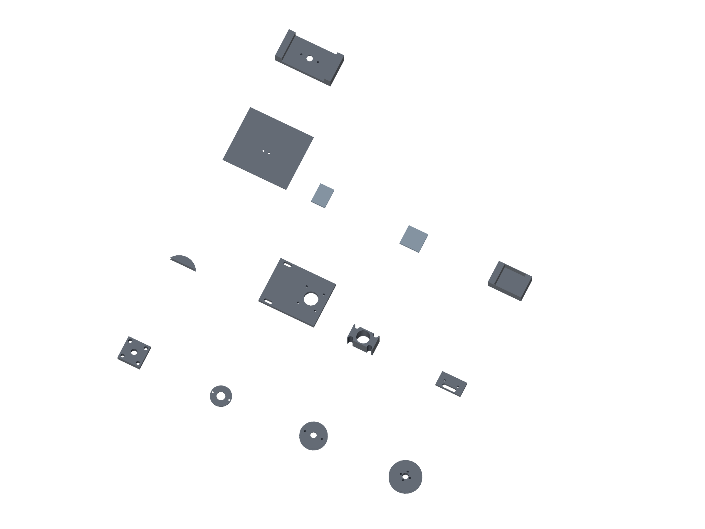

Kit / printed parts06 / 179
Print the named parts
The filenames are the part IDs. Quantities below build one positioner and two observation stages, plus the fitting and drilling tools.

| Part / STL basename | Qty | Material |
|---|---|---|
fiber-swivel-base | 2 | PET-GF |
fiber-bearing-cap | 3 | PET-GF |
torque-cord-pulley | 1 | PET-GF |
pulley-80t | 6 | PET-GF |
pulley-sector-coupon | 1 | PET-GF |
motor-tension-plate | 6 | PET-GF |
paired-nut-spacer | 6 | PET-GF |
limit-switch-bracket | 28 | PET-GF |
belt-guard | 6 | PET-GF |
gun-jaw-pad | 4 | TPU |
service-load-jaw-pad | 2 | TPU |
hub-drilling-locator | 1 | PET-GF |
fiber-saddle | 2 | PET-GF |
lens-cassette | 2 | PET-GF |
lens-retainer | 2 | PET-GF |
lens-shim | 4 | PET-GF |
Positioner STLs: hardware/printed-parts/fixtures/gun-positioner/stl/. Observation STLs: hardware/printed-parts/fixtures/gun-positioner-observation/.